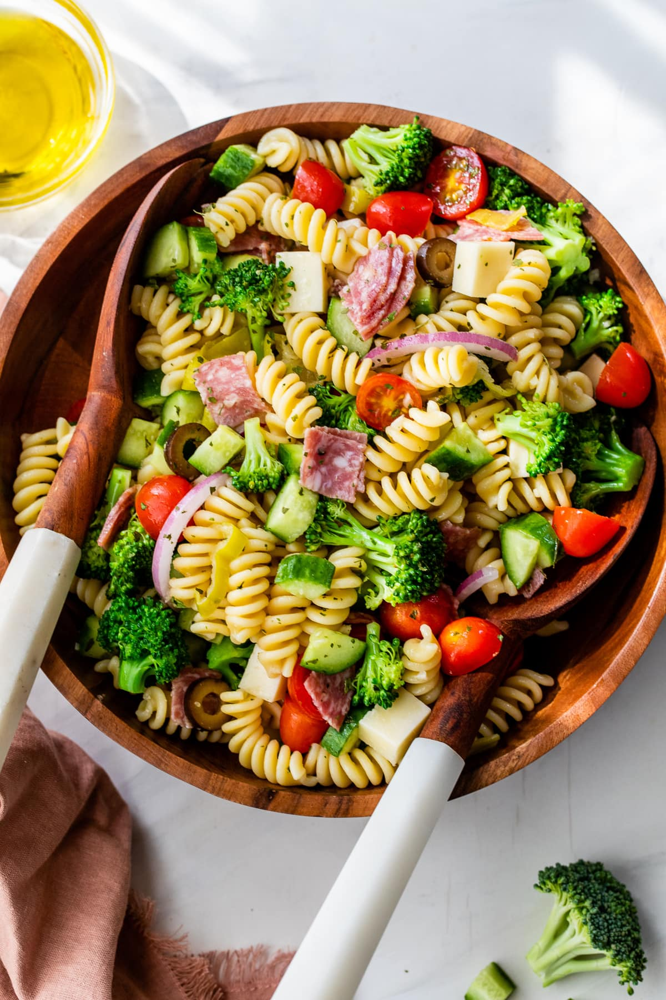

Pasta Salad

Description
A homemade Italian pasta salad dressing takes this simple pasta salad loaded with veggies, cheese, pepperoni, and olives to a whole new level! Serve it right away or make it ahead for packed lunches, picnics, or summer barbecues.
Ingredients
Pasta Salad
- 1 package uncooked tri-color rotini pasta
- 6 ounces pepperoni sausage
- 6 ounces provolone cheese
- 1 red onion
- 1 cucumber
- 3/4 chopped green bell pepper
- 3/4 chopped red bell pepper
- 1 can pitted black olives
- 1/4 cup minced fresh parsley
- 1/4 cup grated Parmesan cheese
Dressing
- 1/2 cup olive oil
- 1/4 cup red wine vinegar
- 2 cloves garlic, minced
- 1 teaspoon dried basil
- 1 teaspoon dried oregano
- 1/2 teaspoon ground mustard seed
- 1/4 teaspoon salt
- 1/8 teaspoon ground black pepper
Steps
- Gather all ingredients.
- Bring a large pot of lightly salted water to a boil. Add rotini and cook until tender yet firm to the bite, 8 to 10 minutes. Drain, rinse with cold water, and drain again.
- Transfer drained, cooked pasta to a large bowl. Add pepperoni, provolone cheese, red onion, cucumber, bell peppers, olives, parsley, and Parmesan cheese.
- Mix olive oil, vinegar, garlic, basil, oregano, ground mustard, salt, and pepper for dressing in a jar with a lid. Seal the jar, and shake until well combined.
- Pour dressing over the pasta salad; toss until well coated. Serve immediately, or cover and chill in the refrigerator for up to 8 hours before serving.
Home